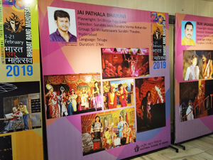
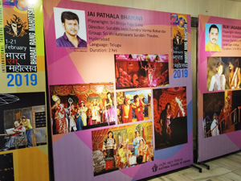

SRI VENKATESHWARA SURABHI THEATRE ®
Surabhi Estd. 1885
-SURABHI JAYACHANDRA VARMA GROUP +91 9014726409
+91 9014726409
+91 9014726409
+91 9014726409


Dramas convey the tradition and culture to next generations. There is a great importance of keeping dramas alive. Though there are many drama groups, Sri Venkateswara Surabhi theatre is unique. This is not an organization; This is a system which has travelled many years with discipline and dedication. Any other group can let live a play (drama) for some time; But this troupe makes the play eternal since this troupe is one family. The descendants inherit the Drama as their asset as well as the essence of life. For a Surabhi artist, Rangmanch (the stage) is the place of birth, Rangmanch is the responsibility to keep going on; Rangmanch is the school where the essence of life dwells, Rangmanch is the only meaning of the life. A Surabhi artist is an artist by birth. It quite understands if we know that most of the Surabhi artists brought on to the stage on their 11th day from birth to perform the role of infant-Krisna. They feel proud to have the opportunity to the babies to be brought on to the stage since it is the only noble life they know by heart.
The set making or the molding work or the costume makings or the electrical work or any other task that’s related to the Surabhi drama are performed by the family. All the artists are technicians as well. There is no difference between the artists whether the artist playing a major role or a medium role; when the artist retire from the current seen, he/she would participate in the back-stage work to make out the next set of the scene.
 

Sri Venkateshwara Surabhi theatre
(at Surabhi colony, Serilingampally, Hyderabad, Telangana)
There was a good era that Surabhi family could lead the good economic life. But coping
with the fast technologies such as Televisions, Cinemas; these days, it is not so easy
to get the maintenances too. In 1996, Padmasri B.V.Karanth conducted three workshops for
Surabhi with the contribution from NSD (Delhi), RRC (Banglore), Spandana (Banglore) and
Alarippu (New Delhi). The intervention of Padmasi B.V.Karanthji made Surabhi to grow
national.
This group is participated in Jashne Bachpan, Bharath Rang mahothsav by NSD, New Delhi and
Bengalore, Bhupal, Assam many places
The Popularity of Surabhi can be differentiating in two phases:
The first 135 years: All the past years, Surabhi lead the nomadic life and most of the
years went in performing at villages. So, Surabhi was known for Telangana & Andhra villages very
well. But the economic conditions were poor enough to downsize the number of troupes.
. And the education of the children was quite disturbed due to the nomadic
life.
The past few years: When Dept. of Culture- Telangana gave a chance to perform
our dramas in Telangana & other places, In effect, the
citizens, people of other states and foriegners habituated to watch the SVST.Surabhi's
performances. Which in effect gave good popularity to SVST.Surabhi thus, Surabhi’s fame
grew internationally. Not only that, the children of the SVST.Surabhi family got the
chance to perform on the stage without disturbing their education. There are kids who
study the primary, secondary educations, and there are young people who are pursuing
post graduations, and PhD’s., in Theatre Arts.
In fact the 135 years of the popularity gained at villages is outsmarted by the past
few years of popularity. This rapid popularity gave Surabhi new hopes to move forward.
Now, there is a fearful thought that if Surabhi is to go back to the villages, it may
loss its light and the existence will be in question. in effect, the people will not
have the opportunity to experience the unique art. In order to let this system live,
either the Govt.(of State as well as Central) or the other donors who are admirers of
drama should come forward and make it happen that SVST.Surabhi should have a
permanent theatre in or around Hyderabad.